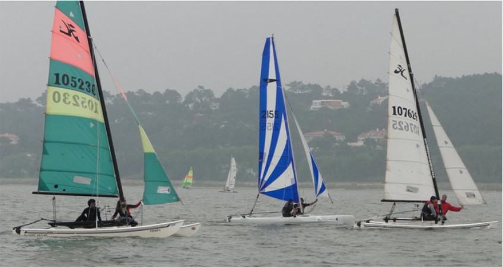

Situada na margem Norte da Lagoa de Óbidos, entre as vilas da Foz do Arelho e do Nadadouro, a Escola de Vela da Lagoa dedica-se desde 1997 ao ensino e à prática da vela em diversas modalidades : Windsurf, Catamaran, Kitesurf, Optimist, Paddleboard, canoagem e ainda ski náutico e wakeboard.
Integrada numa paisagem de rara beleza, apoiada por um excelente espelho de água, a EVL tem iniciado e apoiado centenas de praticantes da modalidade, permitindo-lhes disfrutar de óptimas condições de vento, com toda a segurança.
